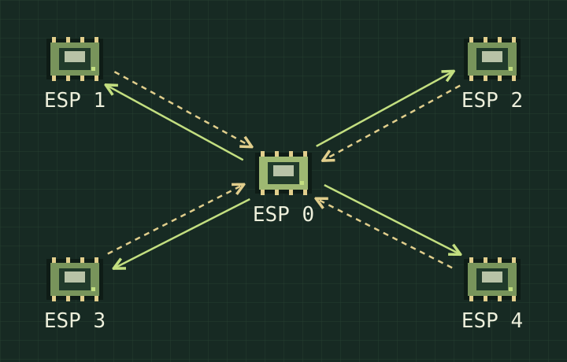

Wi-Fi
Human Detection.
This started with something I noticed at home: why was the Wi-Fi upstairs better in some spots than others? I’m now using five ESP32 boards to watch how Wi-Fi signals change around a room.

How I got into hardware
My family lives in a two-storey townhouse, with the router downstairs. Upstairs, the Wi-Fi could be fine in one spot and much worse just a few steps away. I started wondering why. Were the walls getting in the way? And if walls could affect the signal, could a person’s body do the same? After some reading, I found that it could. That made me want to try it for myself.
My dad is an engineer, so I asked him whether I could build a simple setup that sent and received Wi-Fi signals. I had assumed I would need computers, but he suggested something much smaller and cheaper: an ESP32 microcontroller, a tiny board I could program. I had never heard of one before. I started watching beginner tutorials on YouTube, ordered some parts online, and began putting things together.
The part I put off longest was soldering. I bought the tools early on, but using a soldering iron looked like something that needed skills I didn’t have yet. It took me a while to actually try. On my first attempt, I didn’t know how to use rosin flux properly, and I kept failing to make a good connection. I had to redo the joints again and again before I finally got them to hold. It was a small step, but after that I felt a bit more ready to try the rest.
Once I started, I kept finding other things an ESP32 could do. Recently, I also used one to make a device for an escape-room game. That was exciting to me: something I had first bought to explore Wi-Fi could also become part of a game.
Working with hardware has given me a new way to think about computers, software, and games. I’m still learning, but I like being able to write some code and see something happen outside the screen.
The setup
I use one ESP32 as the main board, ESP 0. It sends out Wi-Fi signals. Four more boards, ESP 1–4, sit in the four corners of the room and receive them.
Each corner board uses CSI readings to track changes in the signal and sends its readings back to ESP 0. The main board keeps track of all four, so it can notice when a reading changes.
I’m looking at signal changes for now. I still need to test how well those changes can tell me whether someone is in the room.
Earlier readings
Saved readings · August 27, 2026
Loading the saved readings…
These are the previously saved router-and-laptop readings, not a live view of the five-board setup above. The board names are kept as recorded. I didn’t record whether anyone was in the room, so this graph alone can’t show how well the project detects a person.
How the graph is drawn
These readings come from 20260827-211315_live_udp.csv. Each point averages √(I² + Q²) across the CSI pairs, including pairs that are zero. These numbers describe the size of the readings; they aren’t a distance or a count of people. Times show when the laptop received the data, so readings from different boards may not line up exactly. The original file has “live” in its name, but this graph uses a recording. Network addresses are left out.
Next steps
I want to keep all five boards in the same places and record an empty room, someone sitting, and someone walking several times. Then I can compare the readings.
Before connecting this to a light, I need to see when it gets the wrong answer. So far, I haven’t shown that it can reliably tell if someone is there, count people, pick up breathing, or control a light.
I’ve had help from my family and Codex with this project. I’ll add more experiment notes and explain which parts I worked on as the project develops.